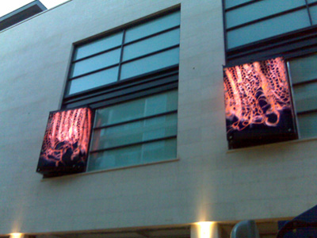
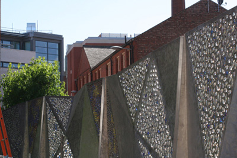

InSite Arts were appointed in 2006 to work with Hammerson's project team to develop a small programme of commission for the Highcross Quarter's development. Each work was conceived to be integral part of the new development. The artworks all assume a natural presence within its given location and, at the same time, give Highcross Quarter another means of expressing its unique identity.

Katayoun Dowlatshahi, has created a series of ten 3000mm by 1800mm glass light boxes. These have been installed to animate the upper levels of the buildings facing onto Causeway Lane, Shires Walk and St. Peter's Lane.

The courtyard area of the new restaurant quarter, located off the public piazza, is home to a 20 metre sculptural installation by Jacqui Poncelet. The work will act as an architectural screen to close off views of the courtyard from the car park on Freeschool Lane.
Photographer Jason Orton has been commissioned to interpret the transformation taking place around Highcross Quarter. His work, a photographic journey through time, will make references to the site's history and consider the relationship between the new development and the wider Leicester community.
Work will be open to the public from September 5th 2008.
 Publication
available October 2008
Publication
available October 2008